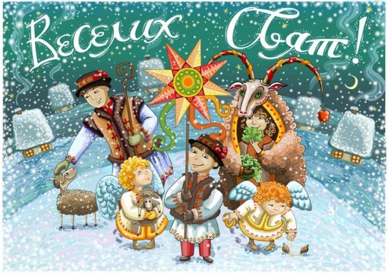

Як ви проводите Різдвяні свята?

- Стать
- Вік
- Чи святкуєте ви різдвяні свята?
- З ким ви святкуєте Різдво?
- Куди Ви ходите на Різдво?
- Чи даруєте ви подарунки на Різдво рідним і друзям ?
- Коли ви святкуєте Різдво?
- Який подарунок ви хотіли б отримати на Різдво?
- Напишіть привітання з прийдешнім Різдвом для українців